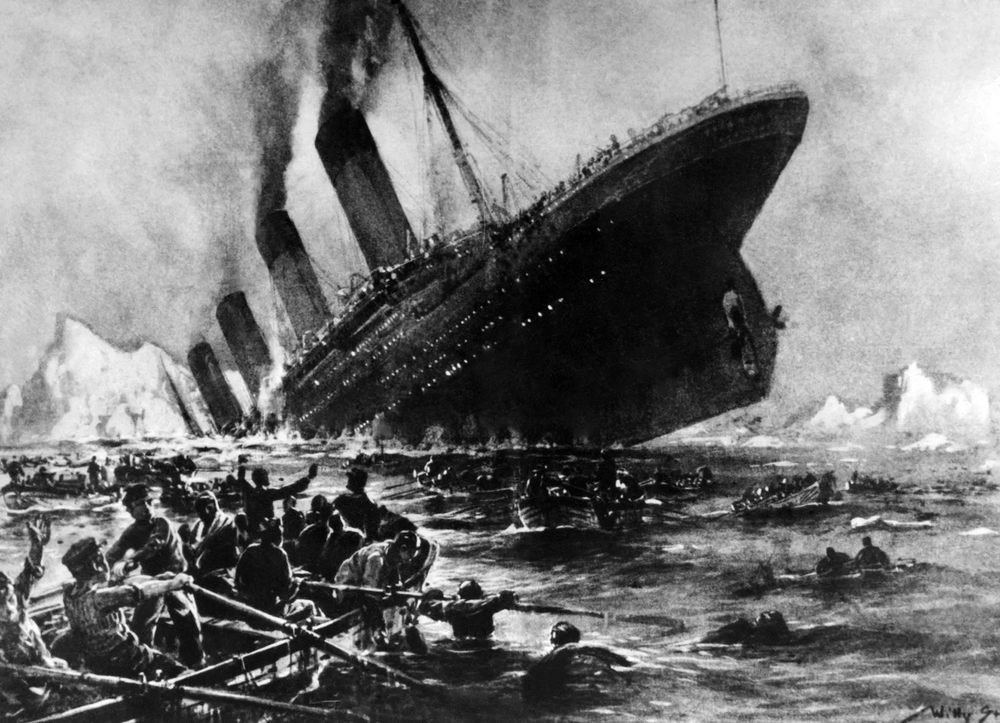
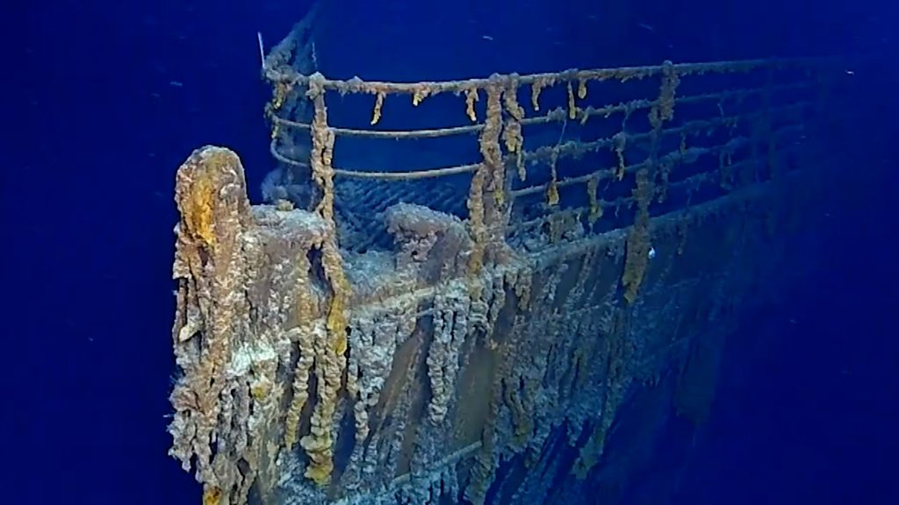

| The R.M.S. Titanic is perhaps the most famous shipwreck in our current popular culture. Titanic was a British-registered ship in the White Star line that was owned by a U.S. company in which famed American financier John Pierpont "JP" Morgan was a major stockholder. Titanic was built in Belfast, Northern Ireland by Harland & Wolff for transatlantic passage between Southampton, England and New York City. It was the largest and most luxurious passenger ship of its time and was reported to be unsinkable. Titanic, launched on May 31, 1911, and set sail on its maiden voyage from Southampton on April 10, 1912, with 2,240 passengers and crew on board. On April 15, 1912, after striking an iceberg, Titanic broke apart and sank to the bottom of the ocean, taking with it the lives of more than 1,500 passengers and crew. |  | |
|  | While there has been some salvage outside of the major hull portions, most of the ship remains in its final resting place, 12,000 feet below sea level and over 350 nautical miles off the coast of Newfoundland, Canada. Its famous story of disaster and human drama has been and continues to be recounted in numerous books, articles, and movies. Titanic has been recognized by the United States Congress for its national and international significance and, in many ways, has become a cultural icon. The disaster also resulted in a number of memorials around the world. In the United States, there are major memorials in Washington D.C.offsite link and New Yorkoffsite link; the Widener Library offsite linkat Harvard University is another major memorial commemorating Henry Elkins Widener, a victim of the sinking. | |